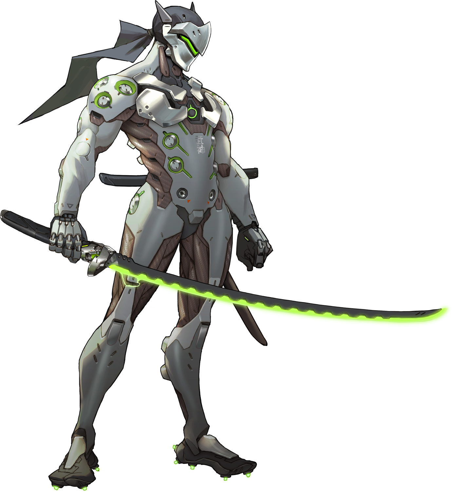
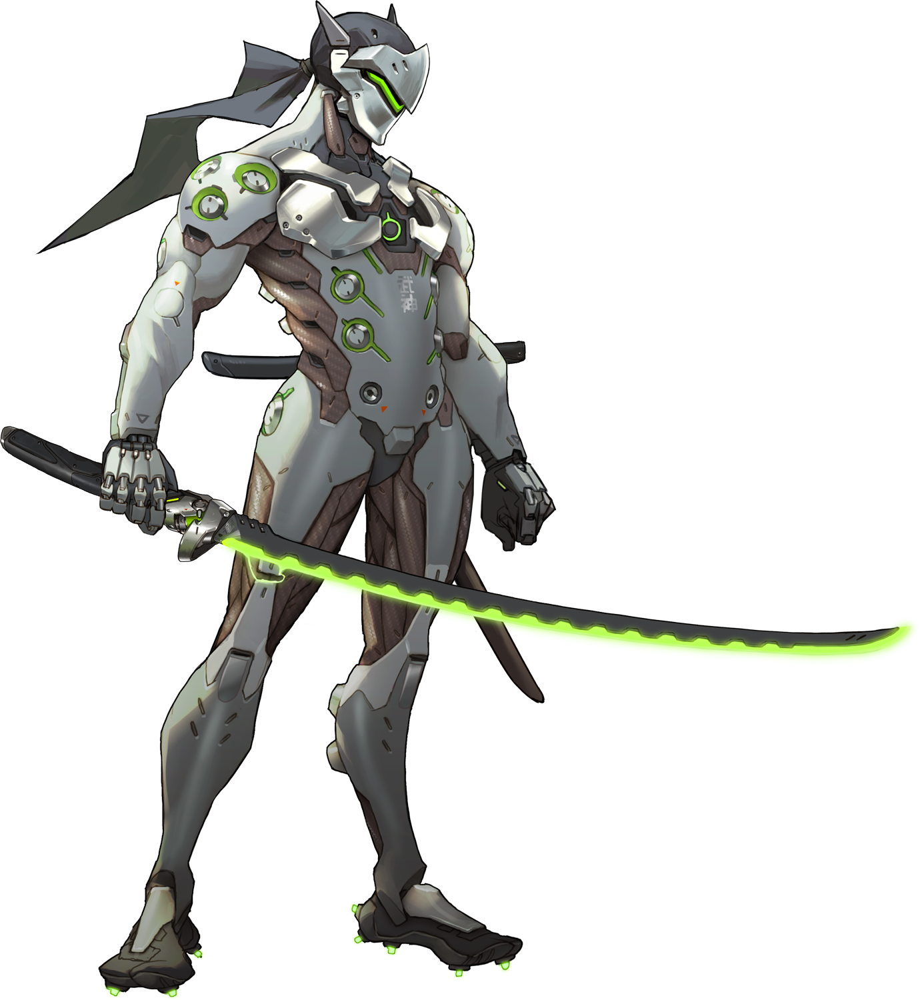

One of the games I often play is Overwatch. It is one of my favourite games currently. Overwatch is a team oriented shooter. My favourite character to play is Genji since I think he is very cool. Genji is a cyborg ninja who serves the organization of Overwatch, a group that protects the world. Genji is a flanker-DPS hero, meaning he mainly attacks the enemy supports and does lots of damage in very little time. He is armed with three weapons, his normal attacks which are shurikens, his swift strike and reflect abilities which come from his secondary blade, and then his ultimate ability, his dragonblade. Below are images of the Overwatch cover art and Genji.
 

Valorant is a first person tactical shooter, taking the 5v5 form factor. VALORANT is heavily based off of Counter-Strike: Global Offensive, even sporting very similar mechanics. One such mechanic is that people cannot shoot and move at the same time, making the game revolve around precision aiming and combining effectively movement and shooting. This combination makes the game extremely challenging and raises the skill ceiling very high. My favourite agent is Reyna, a duelist who can blind her opponents and based off of winning duels can either make herself untradable or can heal the damage she took from the prior duel. It is best to become intangible since then another enemy could kill you back, negating your won duel. Otherwise if the enemy you won against was alone, it is better to heal since you will be ready for the next duel. Below is a picture of Reyna.